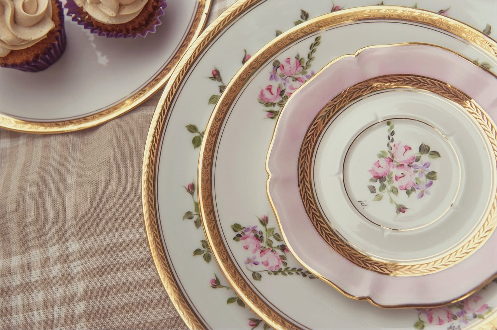

Porcelaine à Croquer
Créations en porcelaine peintes à la main – Pau
Boutique Vinted

La boutique

Service à dessert
139 €
✔ Pièce peinte à la main
Acheter sur VintedPaiement sécurisé • Retrait en boutique possible
Service à café
110 €
✔ Pièce peinte à la main
Acheter sur VintedPaiement sécurisé • Retrait en boutique possible
Porcelaine à Croquer est une boutique artisanale située à Pau, spécialisée dans la création de pièces en porcelaine peintes à la main. Chaque création est unique ou réalisée en séries limitées.
Dernières créations sur Instagram
La boutique en images
Découvrez la boutique Porcelaine à Croquer à Pau à travers les photos publiées sur notre fiche Google.
📸 Voir les photos sur GoogleNous trouver
Porcelaine à Croquer
34 boulevard Barbanègre
64000 Pau
Votre panier
Total : 0 €